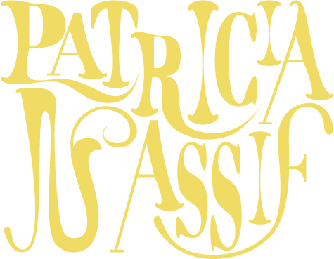
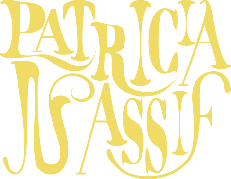
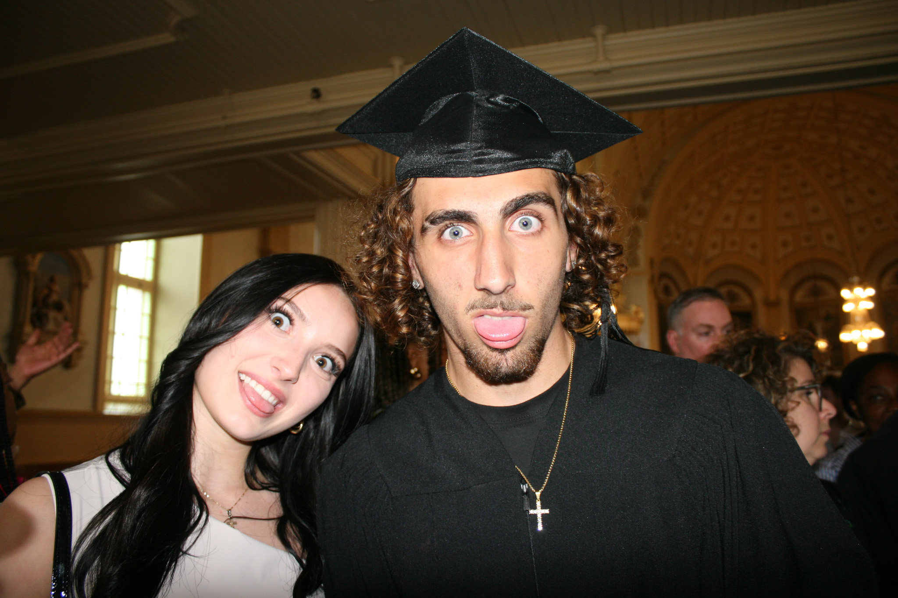
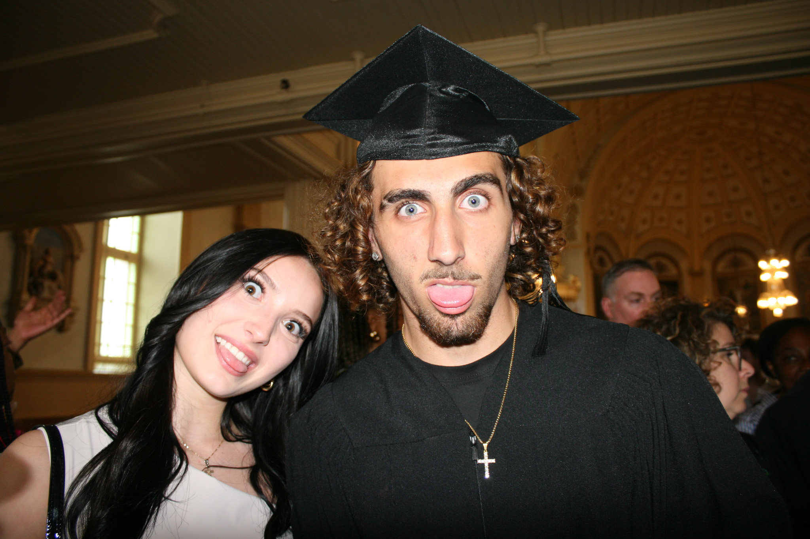
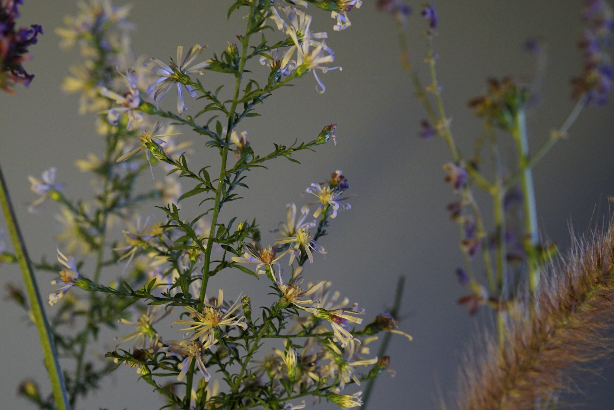
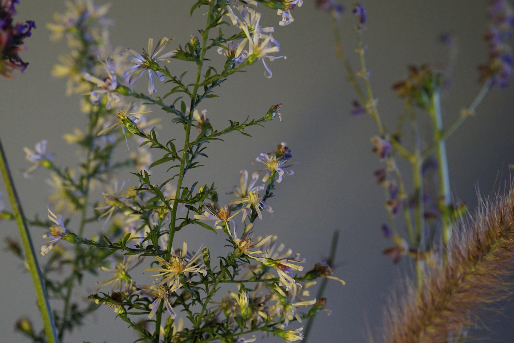

Bienvenu!
JE SUIS PATRICIA!
Passionnée par le cinéma et le design graphique, j’aime explorer la
façon dont l’image et la création visuelle peuvent toucher
profondément les gens et leurs émotions. Me plonger dans une histoire,
oublier qu’il s’agit d’acteurs et m’investir pleinement dans leur
univers visuel et narratif est ce qui m’inspire le plus.
Je suis aussi une grande adepte de la gestion et de l’organisation,
que je considère comme essentielles à la réussite d’un projet, autant
pour son déroulement que pour son résultat final. C’est cette passion
qui m’a menée vers le multimédia, un domaine où je peux allier
créativité, structure et innovation.

MES PROJETS

GRADUATION
PERSONNELLE / PHOTOGRAPHIE


 



J’ai préparé mon matériel et organisé la séance photo tout en laissant de la liberté aux clients. Ensuite, j’ai sélectionné, retouché et livré les meilleures photos dans un dossier structuré, accompagné d’un message de remerciement.
NATURE MORTE
ACADÉMIQUE / PHOTOGRAPHIE
 


J’ai pris de nombreuses photos en prenant le temps nécessaire pour m’assurer que la structure visuelle soit harmonieuse. De plus, j’ai ajusté certaines teintes dans Lightroom afin de mieux contextualiser l’image.
NATURE MORTE
ACADÉMIQUE / PHOTOGRAPHIE
J’ai pris de nombreuses photos en prenant le temps nécessaire pour m’assurer que la structure visuelle soit harmonieuse. De plus, j’ai ajusté certaines teintes dans Lightroom afin de mieux contextualiser l’image.

ME CONTACTER

438-885-4509
nassifpatricia0@gmail.com
Saint-Eustache